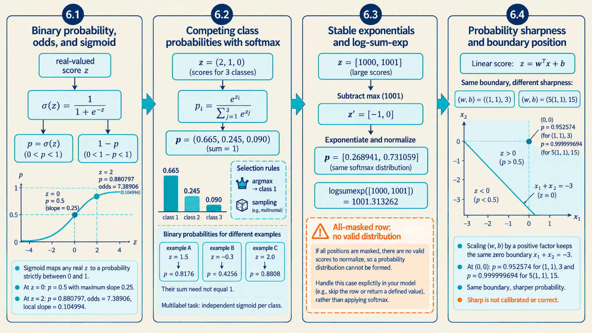
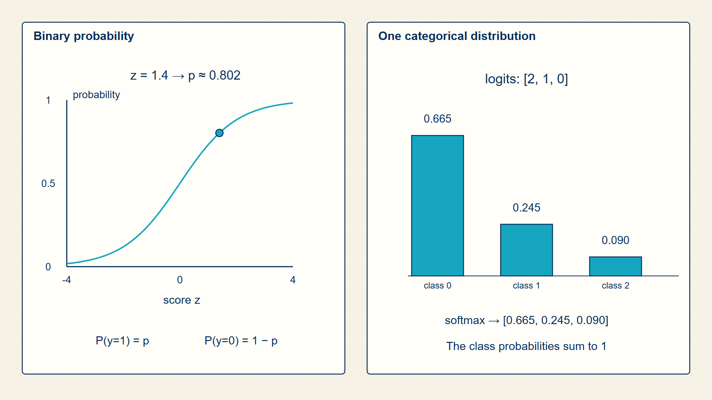

6 From scores to probabilities
Real-valued scores need probability transformations with the appropriate range and normalization.
A score can rank alternatives without specifying how likely any one of them is. Scores can also be negative or exceed one. A probability model needs values in the appropriate range and, for competing outcomes, a total of one. Sigmoid and softmax provide two ways to impose those constraints on affine scores.
Choosing a probability transformation specifies part of the model. It does not establish calibration, agreement between the probability assigned to an event and its observed frequency among cases assigned that probability. Assessing this agreement requires suitable evaluation data, as §9.3 later explains.

A binary decision needs one probability and its complement. Competing classes instead need probabilities that share a total of one. Both calculations must remain stable when their scores have large magnitudes.
6.1 Binary probability, odds, and sigmoid
A binary score ranges over all real numbers, while the probability of the positive class must lie between zero and one. The negative class then has probability \(1-p\). This is a Bernoulli distribution: one probability \(p\) describes an outcome coded 1, and its complement describes outcome 0.
For \(0<p<1\), odds compare the probability of the positive outcome with the probability of its complement:
\[ \mathrm{odds}=\frac{p}{1-p} \tag{6.1}\]
Probability \(p=0.75\), for example, gives odds \(0.75/0.25=3\). The positive outcome has three times the probability of its complement. Equal probabilities give odds 1. Favoring the negative class gives odds below 1.
Taking the natural logarithm of the odds yields log-odds, a quantity that can have either sign. The function converting a probability to log-odds is called the logit function:
\[ \operatorname{logit}(p)=\log\left(\frac{p}{1-p}\right) \tag{6.2}\]
The logarithm maps positive ratios to real numbers and turns multiplication into addition. Its inverse is the exponential \(\exp(z)=e^z\), where \(e\approx2.71828\). Logistic regression models these log-odds with the affine score \(z=w^\top x+b\). Consequently, increasing the score by one multiplies the odds by \(e\).
Solving for probability gives \(e^z=p/(1-p)\), then \(e^z(1-p)=p\), and hence \(p=e^z/(1+e^z)\). Dividing numerator and denominator by \(e^z\) gives the sigmoid, the inverse map from a real-valued logit to a binary probability:
\[ \sigma(z)=\frac{1}{1+\exp(-z)} \tag{6.3}\]
The symbol \(\sigma\) denotes this function. At \(z=0\), \(\sigma(z)=1/2\). A positive score produces a probability above one half, recovering the zero-score decision boundary from §5.2 for a threshold of 0.5. As \(z\) increases without bound, \(p\) approaches 1. As \(z\) decreases without bound, it approaches 0. Neither endpoint has finite log-odds. Finite-precision software can round a probability sufficiently close to zero or one to that endpoint.
The local-slope method of §5.4 also explains sigmoid’s sensitivity to its score. The exponential has derivative \(d\exp(u)/du=\exp(u)\). One way to express the underlying rule is that \((\exp(h)-1)/h\) tends to 1 as \(h\) tends to zero. Factoring \(\exp(u)\) out of its difference quotient leaves that limit. For \(u=-z\), the derivative chain rule adds the factor \(-1\), giving \(d\exp(-z)/dz=-\exp(-z)\).
The reciprocal rule follows from the same difference-quotient idea: \(((v+h)^{-1}-v^{-1})/h=-1/(v(v+h))\), whose limit is \(-1/v^2\) for \(v\ne0\). Applying it to \(v=1+\exp(-z)\) gives \(\sigma'(z)=\exp(-z)/(1+\exp(-z))^2\). One denominator factor forms \(p\), while the other ratio forms \(1-p\):
\[ \sigma'(z)=\sigma(z)\bigl(1-\sigma(z)\bigr) \tag{6.4}\]
The prime denotes a derivative with respect to the function’s argument, here \(z\). Since \(p(1-p)=1/4-(p-1/2)^2\), the largest slope is \(1/4\) at \(p=1/2\). The slope becomes small near either endpoint. This describes the probability’s sensitivity. The derivative of a complete loss also includes the loss’s dependence on \(p\), developed in §8.4.
Example: Probability and the score recovered from it
For \(z=2\), the probability is \(p=1/(1+\exp(-2))\approx0.880797\), or 0.881 at three decimals. Its odds are \(\exp(2)\approx7.38906\), and taking their logarithm recovers 2. Using the rounded probability instead gives \(0.881/0.119\approx7.40\) and \(\log(7.40)\approx2.00\).
The local slope is \(p(1-p)\approx0.104994\), or 0.105. A sufficiently small score increase of 0.01 therefore predicts an increase in probability of about \(0.00105\).
Conclusion: Sigmoid and the logit function follow the same relationship in opposite directions. Odds are a probability ratio, the logit is its logarithm, and the derivative measures how sensitive the probability is near the selected score. Rounded intermediate values account for the slight difference between 7.40 and 7.38906.
One binary probability automatically supplies its complement. A task with several mutually exclusive classes instead needs one shared normalization across all class scores.
6.2 Competing class probabilities with softmax
When exactly one of several classes is the required output, increasing the probability of one class must leave less probability for the others. Applying sigmoid independently to every class would not enforce that constraint. Softmax converts a row of \(C\) class scores into one probability distribution by dividing each positive exponential by their common sum:
\[ p_i=\frac{\exp(z_i)}{\sum_j\exp(z_j)} \tag{6.5}\]
Here \(z_i\) is the logit for class \(i\) and \(p_i\) its probability. The denominator sums over the class index \(j=1,\ldots,C\) within one example. Summing all numerators gives that same denominator, so \(\sum_i p_i=1\). Exponentiation preserves score order and makes \(p_i/p_j=\exp(z_i-z_j)\). Taking logarithms gives \(z_i-z_j=\log(p_i/p_j)\). Each logit can also be written \(z_i=\log p_i+c\) for one shared row constant \(c\). §6.3 introduces log-sum-exp to calculate that constant stably. The probabilities therefore determine logit differences, but not a unique absolute logit vector. Adding the same constant to every score leaves the distribution unchanged.
Example: Three classes for one input
For logits \(z=(2,1,0)\), the exponentials are approximately \((7.39,2.72,1.00)\), with sum 11.11. Using unrounded values in the division gives \(p\approx(0.665,0.245,0.090)\). These displayed probabilities sum to 1.000.
Conclusion: The largest score remains the most probable class, and all three entries compete for a total probability of one. This is one three-class prediction, not three separate binary examples.
The batch from §5.3 makes three binary predictions instead. Its unchanged parameters give logits \([0.9,-0.2,0.6]\) and aligned targets \([1,0,1]\). Applying sigmoid separately gives positive-class probabilities \([0.710950,0.450166,0.645656]\), approximately \([0.711,0.450,0.646]\). Their sum need not be one because they belong to different examples. For each row, the negative-class probability is its own complement. A two-score softmax with logits \((0,z)\) would produce the same pair \((1-\sigma(z),\sigma(z))\).
A categorical distribution assigns probabilities summing to one to a finite set of mutually exclusive outcomes. A draw from that distribution selects one outcome at random according to those probabilities:
\[ y\sim\operatorname{Categorical}(p_1,\ldots,p_C) \tag{6.6}\]
The symbol \(\sim\) means “is sampled from.” Here \(y\) denotes the sampled output, rather than the reference label used in the training examples. Selecting the largest probability is a different rule: it always chooses a maximizing class, subject to a tie policy. Sampling allows other classes to be chosen. A training loss can use the full probability vector without drawing a class.
For probabilities \((0.7,0.2,0.1)\), cumulative intervals are \([0,0.7)\), \([0.7,0.9)\), and \([0.9,1)\). A uniform draw of 0.75 lies in the second interval. With class IDs 0, 1, and 2, it selects class 1 despite class 0 having the largest probability. The interval lengths make repeated draws follow the assigned probabilities.
The following runnable PyTorch example implements both layouts. torch.sigmoid handles the three binary logits. torch.nn.functional.softmax, imported through F, handles two rows of three class logits. dim=-1 selects the last axis, the class axis, so examples are normalized independently.
Code example: Sigmoid for binary logits and softmax for multiclass logits
import torch
import torch.nn.functional as F
binary_logits = torch.tensor([0.9, -0.2, 0.6])
binary_probabilities = torch.sigmoid(binary_logits)
class_logits = torch.tensor([[2.0, 1.0, 0.0], [0.2, 0.2, 0.2]])
class_probabilities = F.softmax(class_logits, dim=-1)
print(binary_probabilities)
print(class_probabilities)
print(class_probabilities.sum(dim=-1))The binary result matches the running batch above. The first multiclass row gives approximately [0.6652, 0.2447, 0.0900]. The second, with equal scores [0.2, 0.2, 0.2], gives three probabilities of one third. The last printed array is [1, 1], one sum per class row. This checks probability arithmetic, not calibration or model quality.
Softmax fits a one-class-per-example task. A multilabel task, where several classes can apply at once, can instead use one sigmoid probability per label. In both cases the output classes and training targets must match the task. The exponentials in these formulas also need care: a valid mathematical probability can be lost through an overflowing intermediate calculation.
6.3 Stable exponentials and log-sum-exp
Computing \(\exp(1000)\) directly exceeds the range of common floating-point types, even though a softmax distribution involving a score of 1000 can be well defined. Overflow occurs when a result exceeds the finite range supported by its numerical type. Dividing overflowing exponentials afterward cannot recover the intended probabilities.
For a row of finite logits, subtracting its maximum \(m\) before exponentiation solves this intermediate-range problem. Algebraically, \(\exp(z_i-m)=\exp(z_i)/\exp(m)\). The common factor cancels between numerator and denominator:
\[ \operatorname{softmax}(z)_i=\frac{\exp(z_i-\max(z))}{\sum_j\exp(z_j-\max(z))} \tag{6.7}\]
Here \(m=\max_j z_j\). The largest shifted logit is zero, so its exponential is 1 and all others are at most 1. At least one entry contributes 1 to the denominator. Contributions below the representable range may round to zero, but the calculation avoids exponentiating a large positive score.
For \(z=[1000,1001]\), subtracting 1001 gives \([-1,0]\). Their exponentials are approximately \([0.367879,1]\), whose sum is 1.367879. Dividing gives \([0.268941,0.731059]\). The larger original score retains the larger probability. Moving both scores by the same amount changes neither probability.
Log-probabilities need the logarithm of the original exponential sum. Factoring out \(\exp(m)\) before taking the logarithm gives the log-sum-exp calculation:
\[ \operatorname{logsumexp}(z)=m+\log\left(\sum_j\exp(z_j-m)\right),\quad m=\max_j z_j \tag{6.8}\]
The logarithm turns the factored product into \(m\) plus the logarithm of the shifted sum. Thus a class log-probability can be calculated as \(\log p_i=z_i-\operatorname{logsumexp}(z)\) without first storing a tiny probability and then taking its logarithm.
For the extreme pair above, log-sum-exp is \(1001+\log(1.367879)\approx1001.313262\). For the separate pair \([1,2]\), it is \(2+\log(\exp(-1)+1)\approx2.313262\), or 2.313. The 999 difference between these results restores the common score shift, while the normalized probabilities are identical.
The finite-maximum condition matters when excluding candidates with a mask. §2.2 distinguishes mask roles, and §16.3 later applies score masking to attention. A blocked position may receive \(-\infty\) so its exponential is zero. This works if at least one allowed score is finite. If an entire row is \(-\infty\), subtracting its maximum evaluates \(-\infty-(-\infty)\), which is undefined. A model must retain a valid candidate or apply an explicit empty-row policy before normalization. Max subtraction also does not repair arbitrary missing numerical values represented as NaN.
PyTorch supplies torch.logsumexp and torch.nn.functional.log_softmax for these calculations. Its logit-based classification losses combine the required operations. §8.1 later explains their raw-logit input contract. Stable evaluation preserves the model’s mathematical distribution within numerical precision. It does not improve the distribution’s agreement with targets.
6.4 Probability sharpness and boundary position
Two classifiers can make identical zero-threshold decisions while assigning different probabilities to them. §5.2 showed that multiplying weights and bias by the same positive constant preserves the zero-score boundary. With a factor greater than one, sigmoid converts that score scaling into sharper probabilities: positive scores move closer to probability one, and negative scores move closer to zero. A factor between zero and one instead moves probabilities toward one half.
The probability maps below distinguish one binary score from several competing class scores.

In the binary case, \(z=0\) always corresponds to \(p=0.5\). In the multiclass case, increasing just one logit raises its probability and lowers its competitors’ probabilities. Shifting all class logits equally leaves softmax unchanged, while scaling their differences can concentrate probability on the largest scores.
For a parameter comparison, start with \(w=(1,1)\) and \(b=3\), giving boundary \(x_1+x_2=-3\). At input \((0,0)\), its score is 3. Its positive-class probability is about 0.952574. Multiplying both weights and bias by 5 gives \(w=(5,5)\) and \(b=15\). The score becomes 15 and the probability about 0.999999694, while the boundary stays at \(x_1+x_2=-3\).
Now multiply the original weights and bias by \(1/3\). The new values are \(w=(1/3,1/3)\) and \(b=1\). At \((0,0)\), the score falls from 3 to 1 and the positive-class probability falls to about 0.731059. The boundary remains \(x_1+x_2=-3\) because every term was scaled by the same positive factor. This comparison changes probability sharpness without adding a second change from rounded coefficients.
Changing the bias alone has a different effect. Keeping \(w=(1,1)\) and changing \(b\) from 3 to 1 moves the boundary from \(x_1+x_2=-3\) to \(x_1+x_2=-1\). Changing the relative weights can rotate it. These operations alter which inputs cross the decision threshold, while positive scaling of the entire score preserves those decisions.
The derivative makes the relationship quantitative. For feature \(x_j\), the chain rule gives \(\partial p/\partial x_j=p(1-p)w_j\) with other features fixed. Probability sensitivity therefore depends on both the coefficient and the current score. A sharper probability is not evidence of a more accurate decision or better calibration. Those claims require reference outcomes on appropriate evaluation data.
The probabilities now describe the alternatives, but they do not select an output by themselves. Chapter 7 develops maximum selection, sampling, and sequence-generation choices.
Chapter checkpoint
Why does the sigmoid output for three binary examples need no common sum of one? What changes if the three scores instead describe competing classes for one example?
Answer: Each binary example has its own positive probability and complementary negative probability. Different examples are not alternatives in one draw. For competing classes of a single example, softmax normalizes across the class axis so those alternatives share a total of one.
A positive constant multiplies every weight and the bias of a binary classifier. What happens to the zero-score boundary, and does max subtraction make an all-masked softmax row valid?
Answer: The zero set and score signs remain unchanged. For every nonzero score, a factor above one moves the sigmoid probability farther from 0.5. This does not establish better calibration. An all-masked row has no finite maximum or valid probability denominator, so it needs a separate policy before softmax.